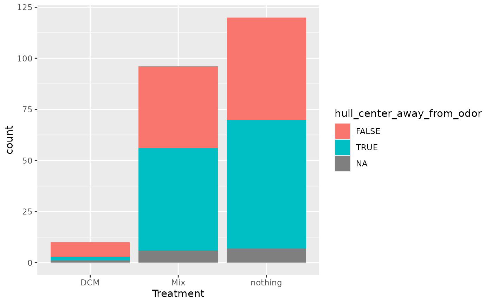
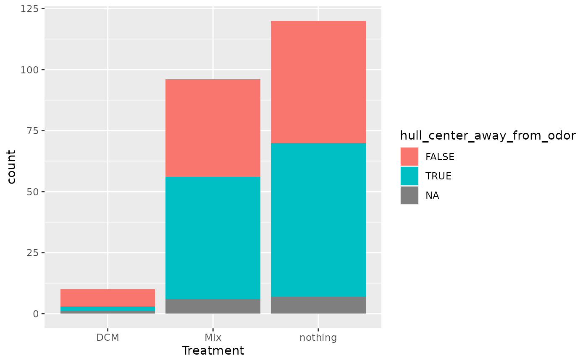

Map convex hull on MiteMap
convex_hull_mitemap.RdMap convex hull on MiteMap
Usage
convex_hull_mitemap(
MiteMap,
unity = 1,
tbe = 3,
plot_show = TRUE,
probs_quantile = 0.68,
min_nb_spatial_points = 2,
each_point_count_one = FALSE,
hull_col = "red",
plot_center_of_mass = TRUE,
verbose = TRUE
)Arguments
- MiteMap
(required) The result of import_mitemap
- unity
(default = 1): size of square grid in mm
- tbe
(default = 3)
- plot_show
(Logical, default = TRUE) : Do we plot all mitemap ?
- probs_quantile
(default = 0.68)
- min_nb_spatial_points
: Minimum number of spatial point to keep the sample
- each_point_count_one
(Logical ; default = FALSE) If TRUE, each spatial point count only for one time step instead. By default, if the mite stay 3t at a given spatial location, the spatial point count 3 times in the construction of the convex hull.
- hull_col
color of hull area
- plot_center_of_mass
(Logical, default = TRUE): Do we plot the center of mass?
- verbose
(Logical, default = TRUE) If TRUE, the function print additional
Value
A dataframe with convex hull information for each run (File_name) and plot of convex hull for each run if plot_show = TRUE.
Examples
if (FALSE) { # \dontrun{
ch <- convex_hull_mitemap(MM_data)
} # }
ch <- convex_hull_mitemap(MM_data, plot_show = FALSE)
#> Number of spatial points conserved using tbe = 3: 116 (28.36 %)
#> Number of spatial points conserved using tbe = 3: 110 (21.36 %)
#> Number of spatial points conserved using tbe = 3: 99 (20.84 %)
#> Number of spatial points conserved using tbe = 3: 107 (20.98 %)
#> Number of spatial points conserved using tbe = 3: 149 (35.82 %)
#> Number of spatial points conserved using tbe = 3: 118 (24.95 %)
#> Number of spatial points conserved using tbe = 3: 103 (20.89 %)
#> Number of spatial points conserved using tbe = 3: 85 (24.15 %)
#> Number of spatial points conserved using tbe = 3: 129 (29.05 %)
#> Number of spatial points conserved using tbe = 3: 128 (25.86 %)
#> Number of spatial points conserved using tbe = 3: 98 (27.92 %)
#> Number of spatial points conserved using tbe = 3: 115 (27.64 %)
#> Number of spatial points conserved using tbe = 3: 107 (25.24 %)
#> Number of spatial points conserved using tbe = 3: 11 (78.57 %)
#> No convex Hull found for sample: MM012022_05_17_10h23m30s (none distance < quantile)
#> Number of spatial points conserved using tbe = 3: 155 (57.84 %)
#> Number of spatial points conserved using tbe = 3: 100 (22.62 %)
#> Number of spatial points conserved using tbe = 3: 122 (28.77 %)
#> Number of spatial points conserved using tbe = 3: 88 (17.89 %)
#> Number of spatial points conserved using tbe = 3: 120 (30.15 %)
#> Number of spatial points conserved using tbe = 3: 25 (7.65 %)
#> Number of spatial points conserved using tbe = 3: 157 (43.37 %)
#> Number of spatial points conserved using tbe = 3: 146 (66.97 %)
#> Number of spatial points conserved using tbe = 3: 135 (54.66 %)
#> Number of spatial points conserved using tbe = 3: 66 (16.71 %)
#> Number of spatial points conserved using tbe = 3: 116 (43.12 %)
#> Number of spatial points conserved using tbe = 3: 93 (80.87 %)
#> Number of spatial points conserved using tbe = 3: 109 (44.31 %)
#> Number of spatial points conserved using tbe = 3: 110 (19.71 %)
#> Number of spatial points conserved using tbe = 3: 89 (13.82 %)
#> Number of spatial points conserved using tbe = 3: 17 (65.38 %)
#> Number of spatial points conserved using tbe = 3: 124 (30.85 %)
#> Number of spatial points conserved using tbe = 3: 132 (42.17 %)
#> Number of spatial points conserved using tbe = 3: 90 (14.15 %)
#> Number of spatial points conserved using tbe = 3: 97 (15.57 %)
#> Number of spatial points conserved using tbe = 3: 28 (80 %)
#> Number of spatial points conserved using tbe = 3: 101 (17.97 %)
#> Number of spatial points conserved using tbe = 3: 115 (28.68 %)
#> Number of spatial points conserved using tbe = 3: 116 (26.48 %)
#> Number of spatial points conserved using tbe = 3: 111 (21.1 %)
#> Number of spatial points conserved using tbe = 3: 100 (20.28 %)
#> Number of spatial points conserved using tbe = 3: 102 (19.73 %)
#> Number of spatial points conserved using tbe = 3: 114 (26.76 %)
#> Number of spatial points conserved using tbe = 3: 108 (29.11 %)
#> Number of spatial points conserved using tbe = 3: 124 (32.38 %)
#> Number of spatial points conserved using tbe = 3: 142 (31.91 %)
#> Number of spatial points conserved using tbe = 3: 130 (36.01 %)
#> Number of spatial points conserved using tbe = 3: 145 (39.19 %)
#> Number of spatial points conserved using tbe = 3: 108 (21.43 %)
#> Number of spatial points conserved using tbe = 3: 133 (28 %)
#> Number of spatial points conserved using tbe = 3: 176 (54.83 %)
#> Number of spatial points conserved using tbe = 3: 167 (52.85 %)
#> Number of spatial points conserved using tbe = 3: 149 (59.36 %)
#> Number of spatial points conserved using tbe = 3: 126 (26.92 %)
#> Number of spatial points conserved using tbe = 3: 107 (87.7 %)
#> Number of spatial points conserved using tbe = 3: 117 (26.9 %)
#> Number of spatial points conserved using tbe = 3: 124 (72.09 %)
#> Number of spatial points conserved using tbe = 3: 102 (22.32 %)
#> Number of spatial points conserved using tbe = 3: 74 (33.94 %)
#> Number of spatial points conserved using tbe = 3: 108 (73.47 %)
#> Number of spatial points conserved using tbe = 3: 111 (26 %)
#> Number of spatial points conserved using tbe = 3: 147 (65.92 %)
#> Number of spatial points conserved using tbe = 3: 155 (41.55 %)
#> Number of spatial points conserved using tbe = 3: 113 (22.42 %)
#> Number of spatial points conserved using tbe = 3: 148 (84.57 %)
#> Number of spatial points conserved using tbe = 3: 2 (66.67 %)
#> No convex Hull found for sample: MM012022_05_17_15h23m58s (none distance < quantile)
#> Number of spatial points conserved using tbe = 3: 101 (19.54 %)
#> Number of spatial points conserved using tbe = 3: 57 (77.03 %)
#> Number of spatial points conserved using tbe = 3: 121 (85.21 %)
#> Number of spatial points conserved using tbe = 3: 105 (21.17 %)
#> Number of spatial points conserved using tbe = 3: 96 (15.64 %)
#> Number of spatial points conserved using tbe = 3: 146 (42.07 %)
#> Number of spatial points conserved using tbe = 3: 122 (37.89 %)
#> Number of spatial points conserved using tbe = 3: 148 (38.54 %)
#> Number of spatial points conserved using tbe = 3: 118 (22.06 %)
#> Number of spatial points conserved using tbe = 3: 3 (100 %)
#> Number of spatial points conserved using tbe = 3: 4 (80 %)
#> No convex Hull found for sample: MM012022_05_17_15h33m59s (none distance < quantile)
#> Number of spatial points conserved using tbe = 3: 104 (19.55 %)
#> Number of spatial points conserved using tbe = 3: 176 (60.27 %)
#> Number of spatial points conserved using tbe = 3: 100 (66.23 %)
#> Number of spatial points conserved using tbe = 3: 119 (34.39 %)
#> Number of spatial points conserved using tbe = 3: 106 (25.48 %)
#> Number of spatial points conserved using tbe = 3: 116 (25.55 %)
#> Number of spatial points conserved using tbe = 3: 145 (37.76 %)
#> Number of spatial points conserved using tbe = 3: 99 (69.23 %)
#> Number of spatial points conserved using tbe = 3: 111 (33.33 %)
#> Number of spatial points conserved using tbe = 3: 141 (36.81 %)
#> Number of spatial points conserved using tbe = 3: 92 (21.05 %)
#> Number of spatial points conserved using tbe = 3: 55 (80.88 %)
#> Number of spatial points conserved using tbe = 3: 132 (27.1 %)
#> Number of spatial points conserved using tbe = 3: 169 (49.85 %)
#> Number of spatial points conserved using tbe = 3: 153 (40.8 %)
#> Number of spatial points conserved using tbe = 3: 82 (25.08 %)
#> Number of spatial points conserved using tbe = 3: 115 (26.93 %)
#> Number of spatial points conserved using tbe = 3: 119 (27.67 %)
#> Number of spatial points conserved using tbe = 3: 103 (19.07 %)
#> Number of spatial points conserved using tbe = 3: 118 (39.46 %)
#> Number of spatial points conserved using tbe = 3: 95 (17.21 %)
#> Number of spatial points conserved using tbe = 3: 33 (70.21 %)
#> Number of spatial points conserved using tbe = 3: 89 (32.96 %)
#> Number of spatial points conserved using tbe = 3: 100 (35.09 %)
#> Number of spatial points conserved using tbe = 3: 61 (18.89 %)
#> Number of spatial points conserved using tbe = 3: 129 (27.45 %)
#> Number of spatial points conserved using tbe = 3: 94 (28.83 %)
#> Number of spatial points conserved using tbe = 3: 165 (44.35 %)
#> Number of spatial points conserved using tbe = 3: 80 (45.71 %)
#> Number of spatial points conserved using tbe = 3: 105 (36.46 %)
#> Number of spatial points conserved using tbe = 3: 5 (100 %)
#> Number of spatial points conserved using tbe = 3: 109 (26.72 %)
#> Number of spatial points conserved using tbe = 3: 59 (45.04 %)
#> Number of spatial points conserved using tbe = 3: 78 (48.15 %)
#> Number of spatial points conserved using tbe = 3: 131 (35.6 %)
#> Number of spatial points conserved using tbe = 3: 84 (25.53 %)
#> Number of spatial points conserved using tbe = 3: 102 (31.87 %)
#> Number of spatial points conserved using tbe = 3: 74 (51.39 %)
#> Number of spatial points conserved using tbe = 3: 107 (38.35 %)
#> Number of spatial points conserved using tbe = 3: 126 (50.2 %)
#> Number of spatial points conserved using tbe = 3: 112 (21.58 %)
#> Number of spatial points conserved using tbe = 3: 41 (69.49 %)
#> No convex Hull found for sample: MM012022_05_17_20h27m19s (not enough spatial points)
#> No convex Hull found for sample: MM012022_05_17_20h27m50s (not enough spatial points)
#> Number of spatial points conserved using tbe = 3: 61 (52.14 %)
#> Number of spatial points conserved using tbe = 3: 51 (76.12 %)
#> Number of spatial points conserved using tbe = 3: 3 (100 %)
#> Number of spatial points conserved using tbe = 3: 96 (56.14 %)
#> Number of spatial points conserved using tbe = 3: 81 (44.75 %)
#> Number of spatial points conserved using tbe = 3: 118 (26.22 %)
#> Number of spatial points conserved using tbe = 3: 64 (66.67 %)
#> Number of spatial points conserved using tbe = 3: 68 (13.13 %)
#> Number of spatial points conserved using tbe = 3: 108 (29.51 %)
#> Number of spatial points conserved using tbe = 3: 103 (17.73 %)
#> Number of spatial points conserved using tbe = 3: 102 (17.2 %)
#> Number of spatial points conserved using tbe = 3: 113 (24.2 %)
#> Number of spatial points conserved using tbe = 3: 98 (19.18 %)
#> Number of spatial points conserved using tbe = 3: 92 (17.9 %)
#> Number of spatial points conserved using tbe = 3: 92 (29.97 %)
#> Number of spatial points conserved using tbe = 3: 115 (32.76 %)
#> Number of spatial points conserved using tbe = 3: 83 (19.53 %)
#> Number of spatial points conserved using tbe = 3: 116 (27.55 %)
#> Number of spatial points conserved using tbe = 3: 96 (18.57 %)
#> Number of spatial points conserved using tbe = 3: 89 (45.18 %)
#> Number of spatial points conserved using tbe = 3: 106 (43.8 %)
#> Number of spatial points conserved using tbe = 3: 89 (58.17 %)
#> Number of spatial points conserved using tbe = 3: 55 (35.71 %)
#> Number of spatial points conserved using tbe = 3: 70 (43.75 %)
#> Number of spatial points conserved using tbe = 3: 85 (41.87 %)
#> Number of spatial points conserved using tbe = 3: 87 (20.33 %)
#> Number of spatial points conserved using tbe = 3: 96 (16.24 %)
#> Number of spatial points conserved using tbe = 3: 101 (36.73 %)
#> Number of spatial points conserved using tbe = 3: 132 (35.58 %)
#> Number of spatial points conserved using tbe = 3: 121 (21.72 %)
#> Number of spatial points conserved using tbe = 3: 3 (100 %)
#> No convex Hull found for sample: MM012022_05_18_00h25m45s (none distance < quantile)
#> Number of spatial points conserved using tbe = 3: 116 (35.8 %)
#> Number of spatial points conserved using tbe = 3: 73 (29.2 %)
#> Number of spatial points conserved using tbe = 3: 94 (20.17 %)
#> Number of spatial points conserved using tbe = 3: 95 (22.95 %)
#> Number of spatial points conserved using tbe = 3: 104 (16.8 %)
#> Number of spatial points conserved using tbe = 3: 92 (16.91 %)
#> Number of spatial points conserved using tbe = 3: 93 (21.33 %)
#> Number of spatial points conserved using tbe = 3: 121 (28.67 %)
#> Number of spatial points conserved using tbe = 3: 30 (10.17 %)
#> Number of spatial points conserved using tbe = 3: 99 (24.21 %)
#> Number of spatial points conserved using tbe = 3: 21 (22.58 %)
#> Number of spatial points conserved using tbe = 3: 106 (22.89 %)
#> Number of spatial points conserved using tbe = 3: 118 (24.95 %)
#> Number of spatial points conserved using tbe = 3: 77 (11.48 %)
#> Number of spatial points conserved using tbe = 3: 90 (15.65 %)
#> Number of spatial points conserved using tbe = 3: 80 (11.56 %)
#> Number of spatial points conserved using tbe = 3: 123 (25.79 %)
#> Number of spatial points conserved using tbe = 3: 138 (41.82 %)
#> Number of spatial points conserved using tbe = 3: 113 (25.11 %)
#> Number of spatial points conserved using tbe = 3: 98 (24.69 %)
#> Number of spatial points conserved using tbe = 3: 92 (17.86 %)
#> Number of spatial points conserved using tbe = 3: 42 (11.17 %)
#> Number of spatial points conserved using tbe = 3: 133 (25.58 %)
#> Number of spatial points conserved using tbe = 3: 90 (16.95 %)
#> Number of spatial points conserved using tbe = 3: 145 (44.75 %)
#> Number of spatial points conserved using tbe = 3: 86 (27.13 %)
#> No convex Hull found for sample: MM012022_05_18_02h24m49s (not enough spatial points)
#> Number of spatial points conserved using tbe = 3: 105 (21.43 %)
#> Number of spatial points conserved using tbe = 3: 113 (19.35 %)
#> Number of spatial points conserved using tbe = 3: 6 (100 %)
#> Number of spatial points conserved using tbe = 3: 99 (20.5 %)
#> Number of spatial points conserved using tbe = 3: 103 (25.18 %)
#> Number of spatial points conserved using tbe = 3: 98 (43.75 %)
#> Number of spatial points conserved using tbe = 3: 125 (29.9 %)
#> Number of spatial points conserved using tbe = 3: 101 (42.98 %)
#> Number of spatial points conserved using tbe = 3: 96 (14.48 %)
#> Number of spatial points conserved using tbe = 3: 113 (21.77 %)
#> Number of spatial points conserved using tbe = 3: 99 (24.63 %)
#> Number of spatial points conserved using tbe = 3: 104 (23.11 %)
#> Number of spatial points conserved using tbe = 3: 152 (54.09 %)
#> Number of spatial points conserved using tbe = 3: 135 (60 %)
#> Number of spatial points conserved using tbe = 3: 133 (30.86 %)
#> Number of spatial points conserved using tbe = 3: 121 (26.13 %)
#> Number of spatial points conserved using tbe = 3: 123 (49.8 %)
#> Number of spatial points conserved using tbe = 3: 98 (17.85 %)
#> Number of spatial points conserved using tbe = 3: 135 (41.93 %)
#> Number of spatial points conserved using tbe = 3: 95 (22.09 %)
#> Number of spatial points conserved using tbe = 3: 130 (41.53 %)
#> Number of spatial points conserved using tbe = 3: 90 (28.66 %)
#> Number of spatial points conserved using tbe = 3: 129 (29.86 %)
#> Number of spatial points conserved using tbe = 3: 116 (37.91 %)
#> Number of spatial points conserved using tbe = 3: 100 (23.42 %)
#> Number of spatial points conserved using tbe = 3: 106 (22.18 %)
#> Number of spatial points conserved using tbe = 3: 81 (26.91 %)
#> Number of spatial points conserved using tbe = 3: 82 (20.71 %)
#> Number of spatial points conserved using tbe = 3: 102 (28.9 %)
#> Number of spatial points conserved using tbe = 3: 86 (27.22 %)
#> Number of spatial points conserved using tbe = 3: 88 (20.56 %)
#> Number of spatial points conserved using tbe = 3: 108 (24.05 %)
#> Number of spatial points conserved using tbe = 3: 94 (23.44 %)
#> Number of spatial points conserved using tbe = 3: 118 (25.82 %)
#> Number of spatial points conserved using tbe = 3: 98 (24.44 %)
#> Number of spatial points conserved using tbe = 3: 148 (69.48 %)
#> Number of spatial points conserved using tbe = 3: 112 (26.73 %)
#> Number of spatial points conserved using tbe = 3: 41 (56.16 %)
#> Number of spatial points conserved using tbe = 3: 113 (77.4 %)
#> Number of spatial points conserved using tbe = 3: 97 (19.17 %)
#> Number of spatial points conserved using tbe = 3: 151 (51.01 %)
#> Number of spatial points conserved using tbe = 3: 86 (14.1 %)
#> Number of spatial points conserved using tbe = 3: 96 (17.36 %)
#> Number of spatial points conserved using tbe = 3: 129 (25.75 %)
#> Number of spatial points conserved using tbe = 3: 72 (14.94 %)
#> Number of spatial points conserved using tbe = 3: 81 (33.61 %)
#> Number of spatial points conserved using tbe = 3: 20 (20.2 %)
#> Number of spatial points conserved using tbe = 3: 83 (13.47 %)
full_join(ch, MM_data) |>
ggplot(aes(x = Treatment, y = hull_area)) +
geom_boxplot()
#> Joining with `by = join_by(File_name)`
#> Warning: Removed 9995 rows containing non-finite outside the scale range
#> (`stat_boxplot()`).
 full_join(ch, MM_data) |>
group_by(File_name) |>
summarise(
hull_center_away_from_odor = sum(center_of_mass_x > 0) > 0,
Treatment = unique(Treatment)
) |>
ggplot(aes(fill = hull_center_away_from_odor, x = Treatment)) +
geom_bar()
#> Joining with `by = join_by(File_name)`

full_join(ch, MM_data) |>
group_by(File_name) |>
summarise(
hull_center_away_from_odor = sum(center_of_mass_x > 0) > 0,
Treatment = unique(Treatment)
) |>
ggplot(aes(fill = hull_center_away_from_odor, x = Treatment)) +
geom_bar()
#> Joining with `by = join_by(File_name)`
